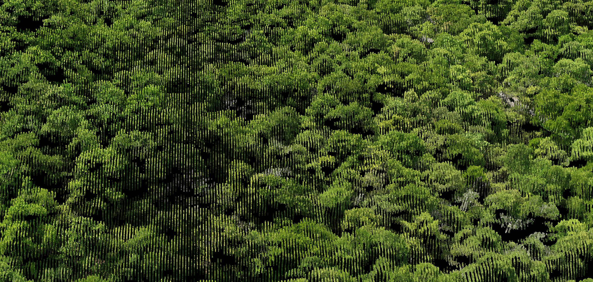

Drone Photogrammetry

dotmap provides drone photogrammetry services for architecture and landscape projects. We produce georeferenced orthomosaics, point cloud models, oblique photographs and video, and multispectral plant health analysis for sites of any size.